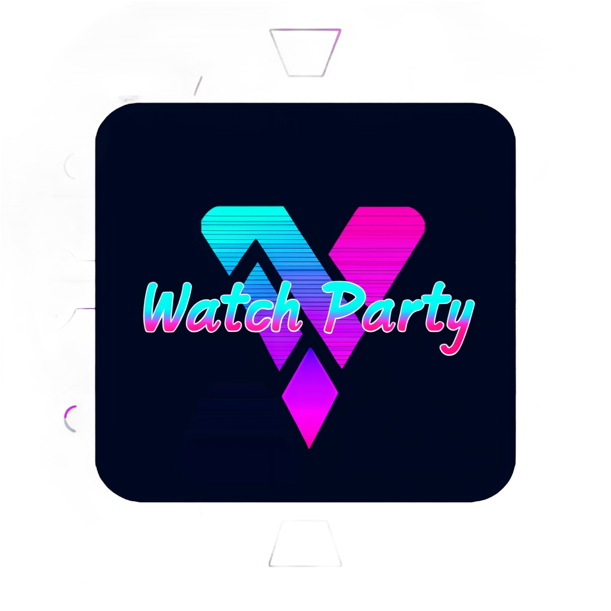

02 / Make it yours
Translations
0 translated
No messages match
Try another search or choose a different section.

Emby Watch PartyCommunity translations Translation discussionA shared screen. More languages.
Translate Watch Party into your language, then download a ZIP ready to install. Start small: messages you leave blank will use English.
Try another search or choose a different section.